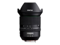
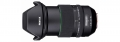
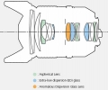

器材库 > 35mm画幅AF变焦镜头 > HD PENTAX-D FA 24-70/2.8ED SDM WR

详细规格
发布日期
2015-09-25
厂家推荐价格
1,299.00 （美元）
焦距
24-70（非全画幅上等效37～107）mm
最大光圈
F2.8
最小光圈
F22
镜头结构
17片/12组
非球面镜片
3片
低/超低色散镜片
4片
光圈叶片
9片
最近对焦距离
38cm
最大放大倍率
0.20X
驱动马达
SDM（超声波马达）
滤镜口径
82mm
镜头卡口
Pentax AF
防抖
否
颜色
黑色
尺寸
88.5 x 109.5mm
重量
787g
天际行者2019-06-14 22:454.33 分
操作性 4.50耐用性 4.00性价比 5.00解像力 4.00色彩还原 4.50机械结构 4.00
天际行者2019-06-14 22:09
兰色暴风2017-03-27 13:304.67 分
操作性 5.00耐用性 4.00性价比 5.00解像力 5.00色彩还原 5.00机械结构 4.00
产品图 / 样片


评测 / 相关文章
- 详细内容 （存档）